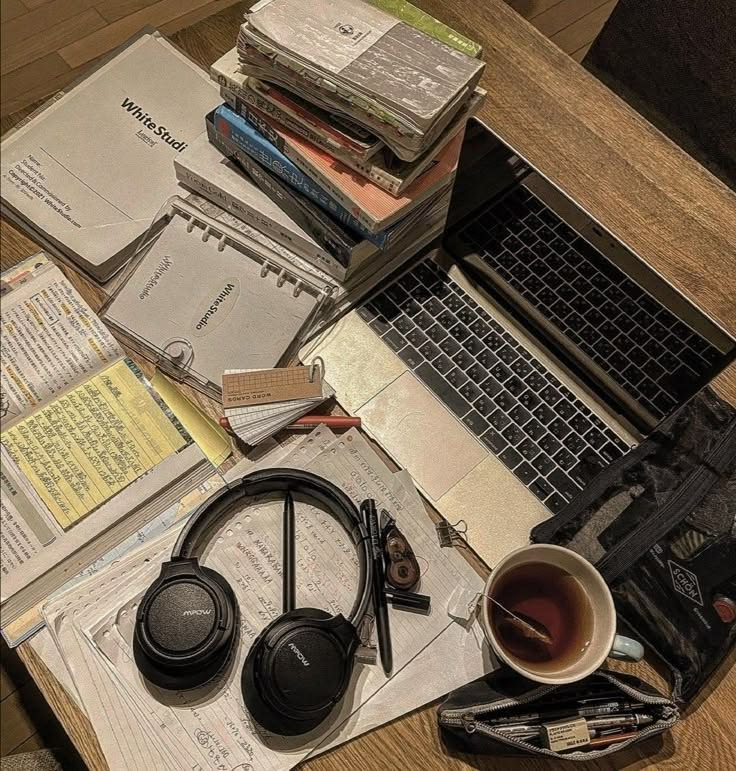

New Delhi
New Delhi
Jawaharlal Nehru University (JNU)
B.A. (Hons.) in French Studies
School of Language, Literature & Culture Studies (SLL&CS)
Studying French language, corrective phonetics, Francophone culture, and literary traditions in New Delhi.
From science classrooms and classical music to French Studies at JNU and Digital Business & Entrepreneurship at IIM Bangalore, my path has followed a growing curiosity about language, culture, and ideas.

New Delhi
Jawaharlal Nehru University (JNU)
School of Language, Literature & Culture Studies (SLL&CS)
Studying French language, corrective phonetics, Francophone culture, and literary traditions in New Delhi.
 Digital Program
Digital Program
Indian Institute of Management Bangalore (IIMB)
Undergraduate Digital Business Program
Exploring digital products, business models, and how ideas become practical ventures.
A short record of the studies, practice, and decisions that shaped the direction I’m following now.
Indian Public School, Hajipur, Bihar
Completed secondary school while training in classical vocals and learning tabla from a teacher—a first meeting of academic focus and musical practice.
Prayag Sangeet Samiti, Prayagraj
Completed the six-year Hindustani classical vocal diploma, with additional harmonium study and tabla lessons with a teacher. Music remains part of how I understand and experience the world.
St. Michael's School, Budh Vihar, Lalganj, Bihar
Finished senior secondary study in Physics, Chemistry, and Biology, initially expecting to continue toward medicine.
A year of reflection
NEET preparation helped me see that medicine wasn’t my path. I also taught myself ukulele by ear—a small return to making room for curiosity.
New Delhi & Bengaluru
Now pursuing French Studies at JNU and Digital Business & Entrepreneurship at IIM Bangalore—two studies that bring communication and practical ideas into conversation.
Curiosity is the thread: from music to language, culture, and enterprise.